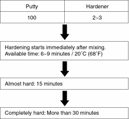
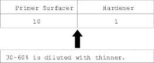
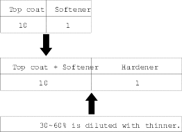

NOTE: Follow the materials manufacturer's instructions.
The use of a special polyester putty for PP bumper is described here:
- Filler
Mixing Ratio:

- Sanding filler
Spray bumper primer (see page 6-19) on the area where the PP material was used. - Primer surfacer
The primer surfacer is used to protect the PP resin surface and fill cavities or flaws before the intermediate coat and top coat.
| Use the 2-component type primer surfacer (grey). |
Mixing Ratio:

- Intermediate coat and top coat
| Use the 2-part polyester urethane top coat.
Top coat is also used for an intermediate coat. |
Mixing Ratio:
NOTE: Be sure to mix the correct amount of the hardener and softener.

NOTE: Use a spray gun to apply the paint. Do not use a brush.
Drying time:
| Air dry 20°C (68°F) | 6~10 minutes Touch dry |
| Almost hardened | 12~24 hours |
| Thoroughly hardened | 96 hours |
Force dry the intermediate coat and top coat.
NOTE: Mix only an amount that can be used before it hardens.